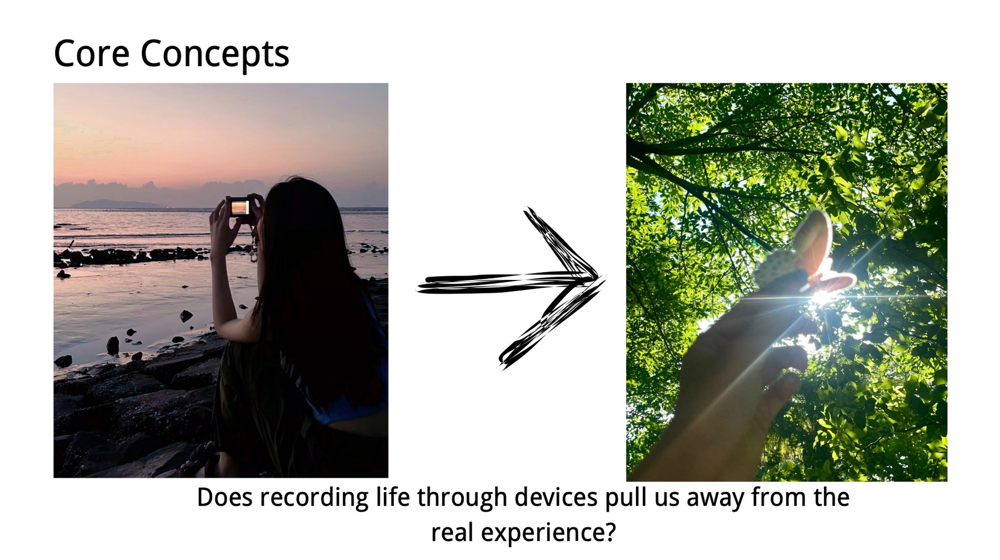
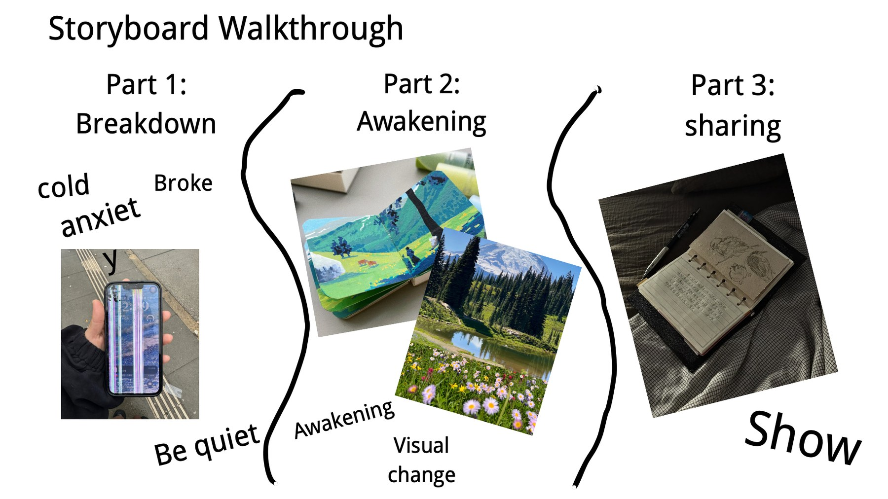
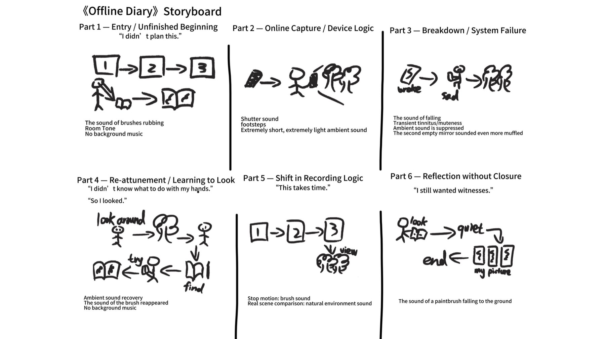
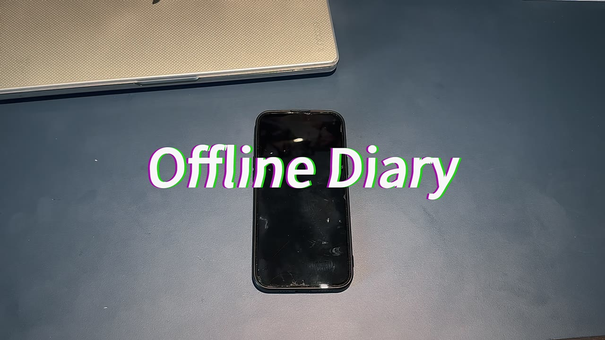
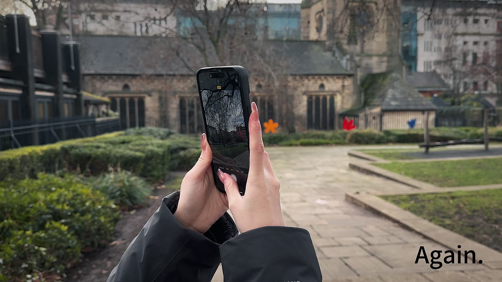
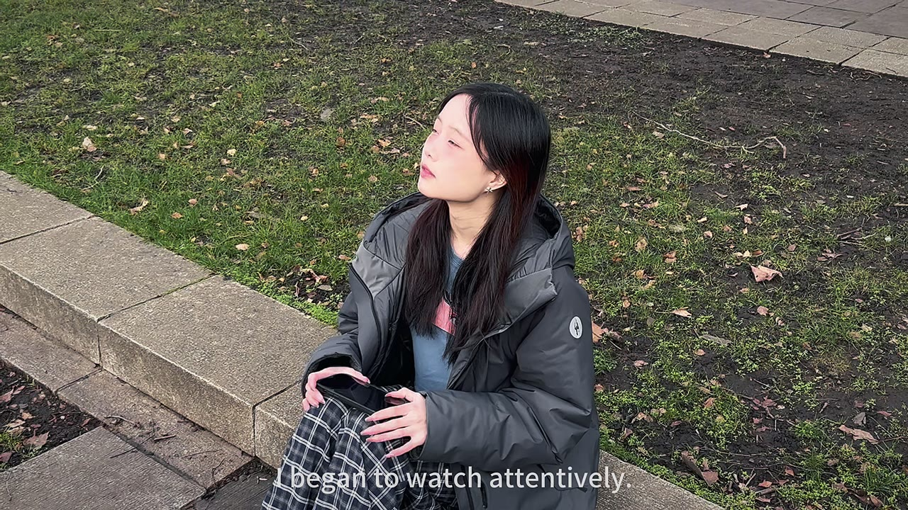
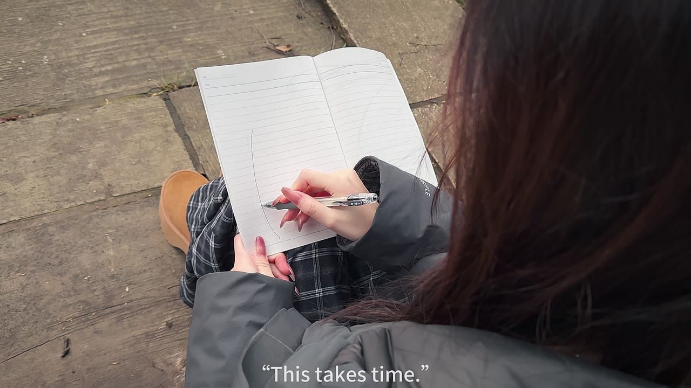
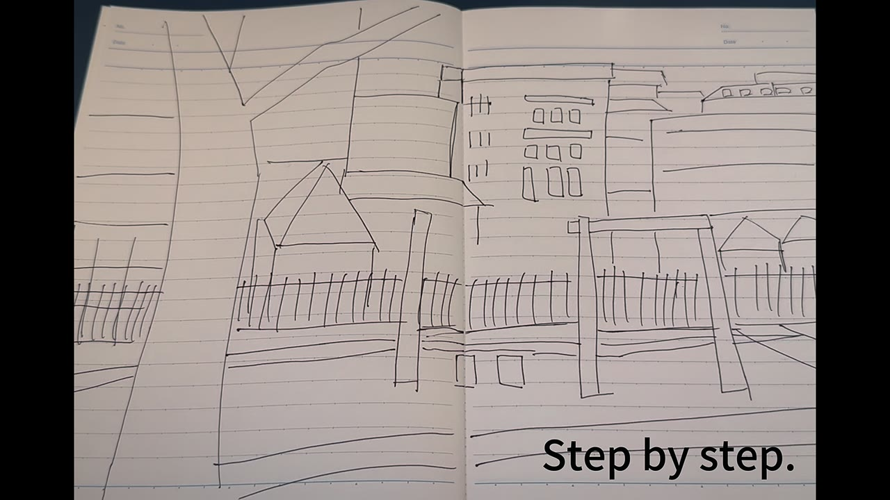
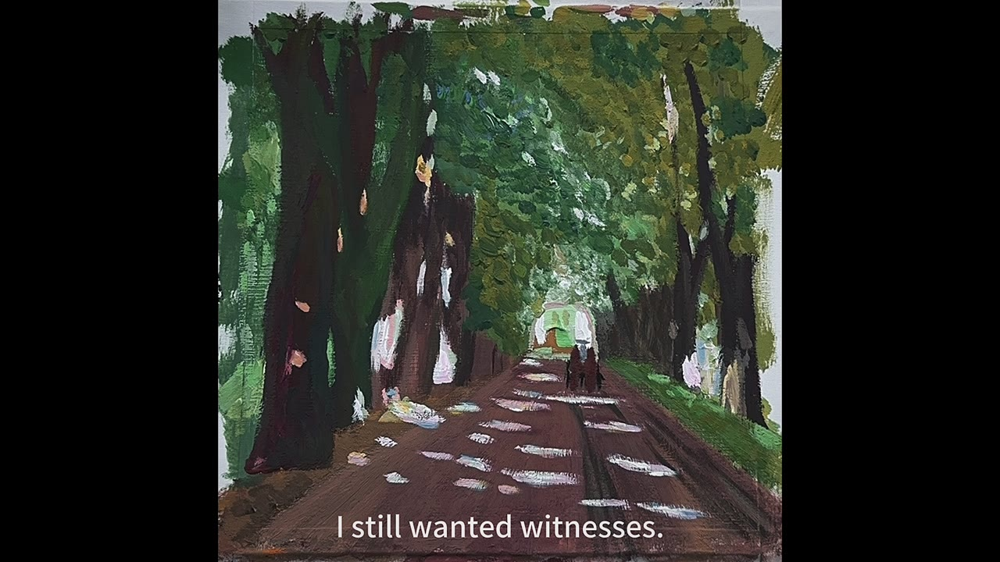

Offline Diary
When I broke my phone, I lost the camera I used to record everything, and went back to a more basic way of recording: drawing. Offline Diary retells that experience, moving from photographs to hand-drawn images to show how the way we record changes the way we see.
The story
Breaking my phone did not stop me relying on it, but it made me aware of how used I had become to recording myself. Drawing created a different way of engaging with life, rather than just capturing it.
The film is not meant to reject digital technology. It documents how perception changes when the screen is no longer there.
Planning the story
The film started from one question: does recording life through devices pull us away from the real experience?

I shaped the story in three acts: breakdown, awakening and sharing.

The storyboard splits the film into six parts, each with its planned sound.

| Part | Line | Sound |
|---|---|---|
| Part 1 — Entry / Unfinished Beginning | “I didn’t plan this.” | The sound of brushes rubbing Room Tone No background music |
| Part 2 — Online Capture / Device Logic | Shutter sound footsteps Extremely short, extremely light ambient sound | |
| Part 3 — Breakdown / System Failure | The sound of falling Transient tinnitus/muteness Ambient sound is suppressed The second empty mirror sounded even more muffled | |
| Part 4 — Re-attunement / Learning to Look | “I didn’t know what to do with my hands.” “So I looked.” | Ambient sound recovery The sound of the brush reappeared No background music |
| Part 5 — Shift in Recording Logic | “This takes time.” | Stop motion: brush sound Real scene comparison: natural environment sound |
| Part 6 — Reflection without Closure | “I still wanted witnesses.” | The sound of a paintbrush falling to the ground |
How I made it
Following Scott McCloud’s idea of “amplification through simplification”, I treated hand-drawing as an alternative way of recording. The process ran from shooting to hand-drawing to synthesis, combining live action, drawing and stop motion.
I deliberately slowed the pace of shooting and editing so that picture and sound stay close to how that time actually felt. The film moves from taking photos to drawing by hand, and the combination of drawing and live action is not decoration: it is the change in how I recorded, and in how I felt.
The film in sequence






This story is not about rejecting digital technology, but about recognising how recording tools shape what we notice, what we remember, and how present we allow ourselves to be.
Feedback and looking back
The module leader said the film raises a clear, critical question, that its narrative structure is effective, and that the theme connects with research on technology and perception. The main opportunity was to engage more with the wider social and technological context, rather than staying at the level of individual experience.
Peers suggested my storyboard could be stronger. Reflecting on that, I realised much of the structure was decided during editing rather than planned in advance. That kept the process responsive, but made the switches between drawn and live-action material harder. Next time I will storyboard pacing, transitions and audio in detail before filming begins.
Credits
All video footage, drawings and narration by Yiran Sun. Sound effects: self-recorded and royalty-free sources. No AI-generated content was used.